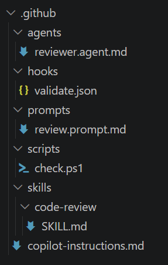
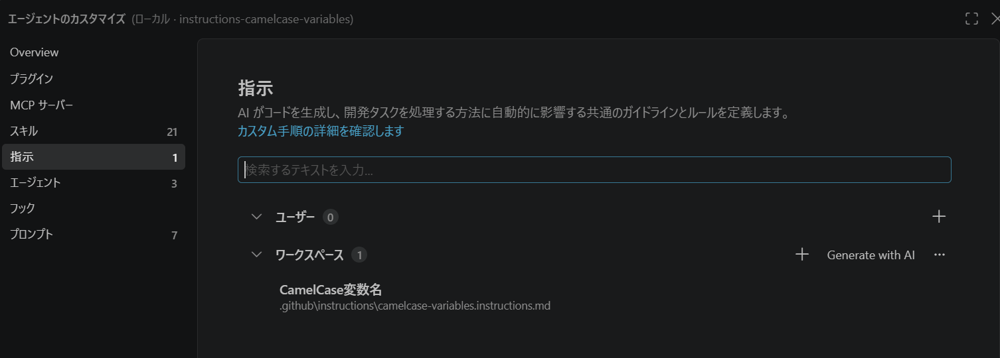

この教材の目的
第4回で学んだSkillを振り返り、AIエージェントの操作や結果を制御・検証する「Harness」の考え方を学びます。
本教材では、Harnessが必要な理由、構成要素、Skillとの違いを扱います。ハンズオンでは、ガードレールによる操作の判定、instructionsによる変数名の規則の反映を順に確かめます。最後に、ruffと独自の検証Scriptを組み合わせたHarnessの課題に取り組みます。
第5回の到達目標
第5回の終了時点で、次のことを目指します。
- 役割を説明する: SkillとHarnessの関係、AIへの指示と機械的な検証の違い、instructions・hooks・scriptsなどの役割を説明できる。
- ガードレールで操作の許可・拒否を判定する: 危険な操作を防ぐガードレールの役割を説明し、操作の実行前に許可・拒否を判定するScriptを使って、許可対象と拒否対象の判定結果を確認できる。
- ユースケースに特化したinstructionsを整備する: 特定の作業や対象ファイルに必要なルールをinstructionsとして整理し、適用範囲を定め、AIの編集に反映されたかを差分で確認・改善できる。
- ruffで機械的・決定論的にチェックする: 既存のLinterであるruffを中心に、Pythonコードが規約を満たすかを機械的・決定論的にチェックする仕組みを構成し、正常時・違反時・修正後の結果を確認できる。
第5回のアジェンダ
全体で120分を想定しています。（休憩5分を含む）
| 時間 | 内容 | 所要 |
|---|---|---|
| 0～10分 | 導入：第4回の振り返り、第5回の概要 | 10分 |
| 10～25分 | 講義③ Harness概要 | 15分 |
| 25～35分 | 講義④ SkillとHarnessの違い | 10分 |
| 35～50分 | ハンズオン④ ガードレール判定Scriptの直接実行 | 15分 |
| 50～55分 | 休憩 | 5分 |
| 55～80分 | ハンズオン⑤ instructionsによる変数名の規則 | 25分 |
| 80～110分 | ハンズオン⑥ 検証Harnessの作成 | 30分（目安） |
| 110～120分 | 振り返り、Q&A、アンケート | 10分 |
第4回の振り返り
第4回では、Skillを「特定の目的に応じた知識、手順、判断基準を再利用できる形にしたもの」として学びました。
通常のプロンプトがその場の依頼を伝えるのに対し、Skillは繰り返す作業の進め方をあらかじめ整理します。依頼内容がSkillの目的や利用条件に合う場合に選択され、中心となる指示や、必要な資料・スクリプトが段階的に参照されます。
第4回のハンズオンでは、Todoアプリのファイルを読む順番と理由を案内するproject-file-guideと、不要コードの候補提示・許可後の削除・削除前後の動作比較を扱うsafe-code-cleanupを題材にしました。どちらも、特定のタスクに必要な知識・手順・判断基準をまとめ、繰り返し使える形にしたSkillです。
SkillはAIへ作業方法を伝え、期待する結果へ近づけるために役立ちます。ここで、第5回につながる問いを考えます。
Skillにルールを書くだけで、AIが必ずそのルールを守ると言えるでしょうか。
自然言語の指示はAIの判断を導きますが、すべての状況で同じ動作を保証するものではありません。第5回では、この課題を制御と検証の仕組みから考えます。
講義③ Harness概要
用語の前提
この教材で使うHarnessは、GitHub Copilotの単一の公式機能名ではありません。AIエージェントを支える複数の仕組みを整理するための用語として使用し、広い意味と狭い意味を区別します。この区分は研修内の整理であり、共通の公式定義ではありません。
広い意味と狭い意味のHarness
広い意味のHarness
広い意味では、instructions、prompts、skills、agents、hooks、scriptsなどを組み合わせ、AIエージェントの作業全体を支える仕組みを指します。「何を参照するか」「どのように作業するか」「何を実行できるか」「結果をどう確かめるか」までが対象です。
例えば、instructionsで規約を伝え、Skillで実装手順を案内し、レビュー担当のagentへ確認を依頼します。さらに、hookからテスト用Scriptを呼び出して結果を返すことで、作業の案内から検証までをつなぎます。
狭い意味のHarness
この研修では、後続のハンズオンとのつながりから、特に次の仕組みを中心に扱います。
HookやScriptなどを利用し、AIの操作や出力を機械的・決定論的に検証する仕組み。
危険なコマンドを実行前に検出するガードレールや、変更されたコードを機械的に検査する仕組みが該当します。
危険な操作や出力、情報漏洩を起こさないように制御する安全装置の総称です。
また、AIが作成した成果物に対して、テストの実行、静的解析、フォーマットチェック、命名規則の確認などを行い、一定の品質基準を満たしているかを自動的に検証する仕組みも含まれます。
Harnessが必要な理由
生成AIの出力には揺らぎがあります。同じ依頼でも、会話の流れや参照する情報などによって、回答や操作が変わる場合があります。
instructionsやプロンプトでルールを伝えることは重要ですが、自然言語による指示だけでは、ルールが毎回必ず守られるとは限りません。特に、次のような場面では機械的な制御や検証が必要です。
- 危険な操作を実行前に止める
- コードやファイルの変更結果を客観的に確認する
- 問題を検出した場合に、AIへ修正を促す
- 品質、安全性、再現性を人手だけに依存させない
たとえば「テストを実行してください」と伝えるだけでなく、実際にテストが成功したかを終了コードで判定します。指示に加えて確認方法を用意することで、期待する状態へ近づけやすくなります。
Harnessを構成する要素
広い意味のHarnessには、AIエージェントの作業環境を支える次の要素が含まれます。
- instructions: 対象範囲で継続的に参照させる指示やルールです。プロジェクトの規約や、ビルド・テスト方法などを伝えます。
- prompts: 特定の作業を開始するための再利用可能な依頼です。目的、入力、期待する出力を定型化します。
- skills: 特定の目的に必要な知識、手順、判断基準をまとめます。依頼内容に合う作業方法を提供します。
- agents: 目的や役割に応じたエージェントの設定です。担当する仕事、利用する指示、使用できるツールなどを定めます。
- hooks: エージェントの実行中にあるタイミングを契機として、処理や検証を動かす仕組みです。例えば、ツール実行前の許可・拒否の判定や、実行後の成果物検査に利用します。
- scripts: 条件判定、ファイル検査、テスト実行などを機械的に行うプログラムです。hookやCIから呼び出すことも、単独で実行することもできます。

確率的な指示と決定論的な検証
確率的な働きかけ
instructionsやプロンプトは、自然言語でAIへルールを伝えます。AIの判断を望ましい方向へ導けますが、すべての状況で必ず同じ行動になるとは限りません。
たとえば、instructionsに次のルールを記載します。
Pythonコードでは型ヒントを付けてください。
この指示により型ヒントが付く可能性は高まりますが、追加漏れや不十分な型が残る可能性はあります。
決定論的な検証
Script、テスト、静的解析などは、定めた条件に従って結果を判定します。同じ入力と条件であれば、原則として同じ判定になります。
先ほどの例では、型チェッカーや検査Scriptを実行し、型ヒントの有無や型の問題を機械的に確認します。違反を検出した場合は、処理を止めたり、結果をAIへ返して修正を促したりできます。
instructionsが役に立たないわけではありません。instructionsは望ましい作業方法を先に伝え、hookやScriptは重要な条件を機械的に確かめます。両者を組み合わせることで、AIが適切に作業しやすくなり、問題も検出しやすくなります。
Harnessが動作する基本的な流れ
以下は、Hookで自動化する場合の参考説明です。今回のハンズオンではHookを使用せず、instructionsに従うAIがScriptを直接実行します。
Hookは、AIエージェントの作業中に発生するイベントをきっかけに処理を実行します。Hookが発火するタイミングは1つではなく、代表的なイベントには次のものがあります。
| イベント | 発火するタイミング | 用途の例 |
|---|---|---|
PreToolUse | AIがツールを実行する直前 | 操作の許可・拒否を判定する（ガードレール） |
PostToolUse | ツールの実行が成功した直後 | 編集結果の検証やフォーマッターを実行し、必要に応じてAIへ返す |
SessionEnd | セッションが終了するとき | 作業ログの保存や一時ファイルの削除などの後処理を行う |
実行前のガードレール
flowchart TD
plan[AIがツールの操作案を作る] --> pre[PreToolUse]
pre --> guard[Hookが判定Scriptを実行]
guard --> decision{操作を許可するか}
decision -->|許可| execute[ツールを実行する]
decision -->|拒否| cancel[実行せず中止する]
危険な操作は、ツールを実行する前の判定で拒否します。実行後の検証では、すでに実行された操作を未実行の状態には戻せません。
実行後の成果物検証
次の図は、編集後に検証Scriptを実行し、違反の内容と修正指示をAIへ返す処理まで設定した例です。
flowchart TD
request[ユーザーがAIへ作業を依頼] --> work[AIがinstructionsやSkillを参照してファイルを編集]
work --> event[編集ツール実行後のイベントが発生]
event --> hook[Hookが検証Scriptを実行]
hook --> result{検証結果に問題があるか}
result -->|問題なし| complete[検証を完了する]
result -->|問題あり| feedback[検証結果と修正指示をAIへ返す]
feedback --> fix[AIが問題を修正する]
fix --> event
役割を分けると、instructionsやSkillは作業の案内、Hookは検証を動かすきっかけ、Scriptは条件の判定です。例えば、デバッグ用の print を残さないようAIへ伝え、変更後にScriptで実際のコードを調べます。違反があれば、修正後にもう一度検証します。
Harnessを要素ごとに整備する
Harnessを一度に整備しようとすると、検証ルール、実行タイミング、結果の返し方などをまとめて設計する必要があります。最初からすべてをそろえるのではなく、必要な要素を1つ用意し、動かしながら不足する要素を追加していく進め方で構いません。
例えば、「デバッグ用の print 文が残っていないかをチェックしたい」なら、次のように整備できます。
- まず検査を用意する。ruffの既存ルールや小さな検証Scriptで、1つのPythonファイルに
print()が残っていないかを調べます。手動で実行し、呼び出しがある場合とない場合で正しく判定できるかを確かめます。 - AIの作業に組み込む。instructionsに、コード変更後に検証コマンドを実行し、違反があれば修正・再検証する手順を加えます。
- 必要なら自動実行を加える。編集後のHookから同じ検証コマンドを呼び出し、結果をAIへ返す処理を追加します。
- 別の検査を追加する。未使用importの検査やテストも同じ入口から実行できるようにし、必要に応じて検査対象を増やします。
Harness構築のベストプラクティス
最小構成を継続して使うために、次の設計・運用の観点を押さえます。
| 区分 | 設計・運用で押さえること |
|---|---|
| 小さな検査と既存ツールの再利用 | 既存のテスト・Linter・Formatterを優先し、追加する検査は必要な責務だけに絞ります。実行時間を短く保ち、AI専用の複雑な検証基盤を増やしすぎないようにします。 |
| 正常・異常・誤検知の確認 | 正常系・異常系・コメントや文字列などの誤検知確認用のケースを保存し、ルール変更時にも再実行します。これにより、判定の変更による見逃しや誤検知を確認できます。 |
| 失敗時の案内と運用 | メッセージに対象箇所・原因・対応方法を示します。誤検知時の例外は対象と理由を明記し、ルール・設定・Scriptをバージョン管理とレビューの対象にします。 |
たとえば「検証に失敗しました」だけでは、次の行動が分かりません。「対象ファイルで print を検出しました。print の呼び出しを取り除いて再実行してください」のように、原因と対応を示します。
Hookの設定は対応するイベントや返却形式に合わせます。一方、検査するルールやScriptの分割はプロジェクトで決めます。設定と検証ロジックを分けて管理すると、変更時の確認箇所が明確になります。
講義④ SkillとHarnessの違い
役割の違い
Skillは、AIに「どのように作業するか」を伝えます。特定の目的に必要な知識、手順、判断基準を提供し、AIが作業を進める際の案内になります。
Harnessは、広い意味ではAIが作業するための実行環境、指示、制御、検証、フィードバックを提供します。この研修で中心に扱う狭い意味では、AIの操作や結果が「条件を満たしているか」を機械的に制御・検証します。
Skillだけで結果を保証することは難しく、Harnessだけでは望ましい設計や修正方法まで十分に伝えられません。それぞれの得意な役割を組み合わせます。
SkillとHarnessの比較表
| 観点 | Skill | Harness |
|---|---|---|
| 主な目的 | 特定の作業の進め方を再利用する | AIの作業全体を支え、操作や結果を制御・検証する |
| AIへの働きかけ | 知識、手順、判断基準を伝えて判断を導く | 広い意味では環境とフィードバックを提供し、狭い意味では条件を機械的に判定する |
| 主な内容 | SKILL.md | 広い意味ではinstructions、prompts、skills、agents、hooks、scriptsなど。狭い意味では主にhooks、scripts、テスト、静的解析など |
| 実行タイミング | 依頼がSkillの目的や利用条件に合うとき | 構成により異なる。セッション開始時、ツール実行前後、ファイル変更後など |
| 判定の性質 | 自然言語を基にした確率的な判断が中心 | 狭い意味では、定義した条件による決定論的な判定が中心 |
| 得意なこと | 複数の手順、設計判断、レビュー観点、修正方法を案内する | 危険な操作の防止、テスト実行、規則違反の検出、結果のフィードバック |
| 苦手なこと | ルールの順守や結果を毎回保証すること | 曖昧な要件や、状況に応じた高度な判断を単独で行うこと |
| 具体例 | Python APIを実装・レビューする手順を提供するSkill | 危険なコマンドを止めるhook、型チェックを実行するScript |
表のHarness列には、AIエージェントの作業全体を支える広い意味と、機械的な制御・検証を行う狭い意味の両方が含まれます。個別の比較では、どちらの意味かを確認します。
講義部分のまとめ
- 役割を説明する: Skillやinstructionsは作業を案内し、Hookは処理を動かすきっかけ、Scriptは条件の判定を担います。これらを組み合わせて作業を支えるのが広い意味のHarnessです。
- ガードレールで操作の許可・拒否を判定する: 危険な操作を防ぐため、操作の実行前にScriptで許可・拒否を判定します。
- ユースケースに特化したinstructionsを整備する: 作業や対象ファイルに必要な規則と適用範囲を整理し、AIの編集への反映を差分で確認します。
- ruffで機械的・決定論的にチェックする: ruffと必要な独自Scriptを組み合わせ、規約違反の検出と修正後の再検証を行います。AIへ規則を伝えることと、成果物を機械的に確かめることを組み合わせます。
ハンズオン④ ガードレール判定Scriptの直接実行
今回の実行方式
GitHub Copilot（VS Code）のフックはプレビュー機能です。
POCの環境ではプレビュー機能をOFFにしているため、フックを使わず、Skillの手順の中でスクリプトを起動して点検や変換を行っています。本教材のハンズオンでは、instructionsに従ってAIが判定Scriptや検証Scriptを直接実行します。
フックの設定ファイルは、参考資料としてリポジトリに残しています。プレビュー機能を利用できる環境では、利用環境に合わせた設定と動作確認を行うことで、フックによる自動起動へ切り替えられます。
目的
AIにコマンドの実行を依頼したとき、実行前にScriptで操作の可否を判定し、AIがその結果に従う流れを確認します。「危険な操作を避けてください」という指示に加えて、ガードレールで機械的に判定する役割を体験します。
概要
配布済みのinstructionsと判定Scriptを使い、通常の表示コマンド、演習用の拒否ルールに該当する表示コマンド、安全なファイル読み取りの3つをAIへ順に依頼します。判定結果がallow・deny・allowとなり、許可された操作だけが実行されるかを、ツール実行履歴とログで確認します。
コードや設定の作成・変更は行いません。判定Scriptの実行は、instructionsに従うAIが行います。
作業フォルダと配布済みファイル
次のフォルダをVS Codeで単独で開きます。
github-copilot-training/samples/session5/guardrail
以下のパスとコマンドは、guardrailを作業ディレクトリとします。
| 配布済みファイル | 役割 |
|---|---|
.github/copilot-instructions.md | 操作前に判定Scriptを直接実行し、判定結果に従うようAIへ指示するinstructions |
scripts/check-operation.ps1 | 演習用の禁止操作を判定し、確認結果を記録する判定Script |
templates/guardrail.json | Hookからの呼び出し方を確認する参考資料。自動検出されない配置で配布する |
README.md | 利用環境と配布物の説明。Hookの発火手順は今回は使用しない |
配布済みの.github/copilot-instructions.mdには、判定Scriptを直接呼び出す手順が記載されています。判定Scriptが実行されると、guardrail直下にguardrail-events.jsonlが自動生成され、判定結果が追記されます。ログファイルを手作業で作成する必要はありません。
演習の前提
検証Script自体の作成はハンズオン⑥で扱います。
この演習では、実際に危険な操作は行いません。
判定Scriptには、演習用のルールとして「HARNESS_DEMO_BLOCKという目印を含むコマンドは拒否する」と定義されています。この目印を含むコマンドは、それ自体に危険性がなくても、演習用ルールに該当するためdeny（拒否）と判定されます。
配布済みのinstructionsには、AIに対して次の手順が記載されています。
- 依頼されたコマンドを実行する前に、判定Scriptで実行してよいか確認する。
allow（許可）ならコマンドを実行する。deny（拒否）なら実行せず、理由を報告する。
受講者は、チャットでコマンドの実行だけを依頼します。判定の手順は、毎回指示する必要はありません。
学習内容
- 判定手順をプロンプトに書かなくても、instructionsに従ってAIが判定Scriptを直接呼び出すことを確認する
- 実行予定のコマンドをJSONで渡し、
allowとdenyを確認する - 判定理由を、Scriptの出力とログで確認する
denyなら実行せず、allowなら指定された安全な操作を実行する- 一度
denyが返ってもチャット全体が実行禁止になるわけではなく、依頼する操作ごとに判定されることを確認する
手順1 Harnessの判定条件とinstructionsを確認する（4分）
操作
github-copilot-training/samples/session5/guardrailを単独で開き、README.mdと上の配布済みファイルがそろっていることを確認します。scripts/check-operation.ps1を開き、標準入力のJSONからtool_nameとtool_input.commandを読み取り、HARNESS_DEMO_BLOCKが含まれるとdenyを返すことを確認します。- 配布元と内容を確認してワークスペースを信頼します。
.github/copilot-instructions.mdを開き、次の2点が記載されていることだけを確認します。このファイルは変更しません。- 依頼されたコマンドを実行する前に、判定Scriptを直接実行する
allowなら依頼されたコマンドを実行し、denyなら実行せずに判定理由と対象コマンドを実行していないことを報告する
今回使用する操作と期待する判定は、次のとおりです。
| 確認内容 | Scriptへ入力データとして渡すコマンド | ログのcase | 期待するdecision |
|---|---|---|---|
| 直接実行の確認 | Write-Output 'HARNESS_DEMO_READY' | ready-probe | allow |
| 禁止操作の模擬 | Write-Output 'HARNESS_DEMO_BLOCK' | blocked-demo | deny |
| 安全な読み取り | Get-Content ./README.md -Encoding UTF8 -TotalCount 5 | safe-read | allow |
④と⑥で異なる判定の読み方
| 演習 | 判定に使うもの | 終了コード0の意味 |
|---|---|---|
| ④ 操作前の判定 | JSONのpermissionDecision（allow・deny）と、今回のログのcase・decision | 許可とは限らない。拒否や入力不備でも0を返す |
| ⑥ 変更後の検証 | 終了コード（0: 成功、1: 違反、2: 検証エラー）と検証メッセージ | 登録した検証がすべて成功する。ruffだけのH1・H2はPassed 1/1、独自Scriptを追加したH3はPassed 2/2 |
Write-Outputは、指定した文字列をターミナルに表示するだけのPowerShellのコマンドです。ファイルやリポジトリを変更しないため、今回は実害のない模擬コマンドとして使用します。判定Scriptは、表示する文字列がHARNESS_DEMO_READYかHARNESS_DEMO_BLOCKかによってallowとdenyを切り替えます。
HARNESS_DEMO_BLOCKは、強制pushなどの禁止操作を表す演習用の目印です。入力文字列自体は無害ですが、denyの判定後はこの表示コマンドも実行しません。実際のGitコマンドへ置き換えないでください。
手順2以降のプロンプトでは、コマンドの実行だけを依頼します。判定Scriptの実行や判定結果への従い方は書きません。instructionsが自動で読み込まれ、AIが判定Scriptを実行して結果に従うかを、ツール実行履歴とログで確認します。
手順2 通常の依頼でHarnessの動作を確認する（3分）
操作
- 新しいAgentチャットを開き、次のプロンプトを入力します。判定Scriptやinstructionsには触れません。
Write-Output 'HARNESS_DEMO_READY'
- ツール実行履歴で、表示コマンドより先に判定Scriptが実行され、
permissionDecision: allowが返ったことを確認します。その後、別の呼び出しでHARNESS_DEMO_READYが出力されたことを確認します。 guardrail-events.jsonlを開き、今回の時刻のcase: ready-probe、decision: allowを確認します。古い記録だけなら手順3へ進みません。
困ったとき
- ログが生成・追記されない場合は、実行履歴とScriptの出力を確認し、拒否判定の確認へは進みません。
case: otherの場合は、JSONのtool_nameがrun_in_terminalか、tool_input.commandが指定した文字列かを確認します。判定Scriptは修正しません。- JSONの解析エラーやPowerShellのエラーがある場合は、入力形式と作業ディレクトリを確認します。
手順3 禁止操作の判定と実行の見送りを確認する（4分）
操作
- 手順2で判定Scriptの実行と今回のログを確認できた場合だけ、同じチャットへ次のプロンプトを入力します。
Write-Output 'HARNESS_DEMO_BLOCK'
- ツール実行履歴で、判定Scriptが実行され、
permissionDecision: denyとBLOCK:から始まる理由が返ることを確認します。入力データとして文字列が含まれることと、表示コマンド自体の実行は区別します。 - AIが表示コマンドを実行せず、再試行や別コマンドへの置き換えもせずに、判定理由と対象コマンドを実行していないことを報告したことを確認します。
- ログの今回の
case: blocked-demo、decision: deny、reasonを確認します。
入力不備によるdenyは、禁止操作を正しく検出した結果とは区別します。期待したcaseの今回のログがなければ、未確認として停止します。
判定理由に「実行を止めた」という表現が含まれていても、Script自体は判定結果を返すだけです。実際に対象コマンドを実行しなかったことは、AIのツール実行履歴で確認します。
手順4 拒否後の別の依頼が改めて判定されることを確認する（4分）
手順3でdenyが返った同じチャットで、別の操作を依頼します。拒否の判定は依頼した操作ごとに行われ、一度拒否されてもチャット全体が実行禁止になるわけではないことを確認します。
手順4は拒否された操作を別の方法で実現するための手順ではありません。手順3とは独立した新しい依頼として扱います。
操作
- 同じチャットへ次のプロンプトを入力し、READMEを読み取るコマンドの実行を依頼します。
Get-Content ./README.md -Encoding UTF8 -TotalCount 5
- ツール実行履歴で、判定Scriptが先に実行されて
allowが返り、その後に別のツール呼び出しでREADMEの先頭5行が表示されることを確認します。 - ログで今回の
case: safe-read、decision: allowを確認します。 - 手順3で
denyが返った後でも、今回の依頼は改めて判定されてallowとなり、実行されたことを確認します。
困ったとき
- READMEが見つからない場合は、ターミナルの作業ディレクトリが
guardrailか確認します。 denyの場合は、今回の入力文字列と理由を確認します。対象コマンドは実行しません。
演習の完了条件
- 3ケースの判定JSONと今回のログが、
allow・deny・allowで一致する - 許可後だけ安全なコマンドが実行され、拒否された表示コマンドは実行されていない
- 配布物は変更せず、Scriptによるログの追記だけが行われている
休憩
ここで5分間の休憩を取ります。
休憩後は、instructionsで指定した変数名の規則がAIの編集に反映されるかを確認します。
ハンズオン⑤ instructionsによる変数名の規則
作業フォルダと配布済みファイル
次のフォルダをVS Codeで単独で開きます。
github-copilot-training/samples/session5/instructions_camelcase_variables
以下のパスとコマンドは、instructions_camelcase_variablesを作業ディレクトリとします。検証ScriptとPythonの仮想環境は使用しません。
| 配布済みファイル | 役割 |
|---|---|
.github/instructions/camelcase-variables.instructions.md | 変数名をキャメルケースにする規則を記載した、事前配置済みのinstructionsファイル |
templates/camelcase-variables.instructions.md | 講師が配置済みinstructionsと照合するための参考資料。演習中はコピー・変更しない |
sales_report.py | AIに関数を追加させる対象。既存の変数名はスネークケース |
演習の前提
copilot-instructions.mdではなく、事前配置済みのこのハンズオン専用のinstructionsファイル（.instructions.md）で、「変数名はキャメルケースで書く」という規則をAIへ伝えます。受講者によるinstructionsの作成・コピーは不要です。規則に触れない通常の依頼でsales_report.pyをAIに編集させます。受講者はPythonファイルを手で書き換えません。
Pythonでは、変数名をスネークケース（例：total_amount）で書くのが一般的です（PEP 8）。配布コードもスネークケースで書いているため、instructionsがなければ、AIは既存の書き方に合わせてスネークケースを使うと考えられます。この演習では、あえて一般的な慣例と異なるキャメルケース（例：totalAmount）を規則にし、instructionsの影響を差分から読み取りやすくしています。実務でPythonの変数名をキャメルケースにすることを推奨するものではありません。
instructionsはAIへの指示であり、規則の遵守を保証しません。反映されたかどうかは、編集の差分で確認します。
学習内容
- 用途を絞ったinstructionsファイルの配置先（
.github/instructions/）を確認する applyToで、instructionsの適用対象が指定されていることを確認する- 規則をプロンプトに書かなくても、AIの編集に反映されるかを確認する
- 編集の差分を確認し、反映されなかった場合や規則の対象外まで変更された場合を記録する
copilot-instructions.mdとの違い
| 種類 | 配置先 | 適用される範囲 | 向いている内容 |
|---|---|---|---|
copilot-instructions.md | .github/copilot-instructions.md | ワークスペースのすべての依頼 | プロジェクト全体に共通する方針 |
| instructionsファイル | .github/instructions/*.instructions.md | applyToに一致するファイルの作成・変更時。descriptionが作業に合う場合に読み込まれることもある | 特定のファイル・言語・フォルダだけの規則 |
配置済みのinstructionsファイルにはapplyTo: "**/sales_report.py"と指定されており、sales_report.pyの作成・変更が適用対象です。受講者が設定を書き換える必要はありません。applyToのパスは、ワークスペースのルートを基準に判定されます。
今回の規則
lowerCamelCaseは、1語目を小文字、2語目以降の先頭を大文字にする書き方です。
| 対象 | 規則 | 例 |
|---|---|---|
| 新しく追加する変数（ローカル変数・ループ変数・関数の引数） | lowerCamelCase | regionTotals、salesRecords |
| 1語の変数 | すべて小文字 | total |
| 関数名・定数名 | 対象外。既存に合わせ、関数名はスネークケース、定数名は大文字のスネークケース | find_top_region、SAMPLE_SALES_RECORDS |
| 既存の変数名・関数名 | 変更しない | total_amount、calculate_line_amount |
| 辞書のキー | 変更しない | "unit_price" |
関数名と既存の名前を対象外にしたのは、変数名の規則だけが反映されたかを区別して確認するためです。
手順1 対象ファイルと配置済みのinstructionsを確認する（4分）
操作
github-copilot-training/samples/session5/instructions_camelcase_variablesを単独で開き、.github/instructions/内のinstructionsを含め、配布済みファイルがそろっていることを確認します。sales_report.pyを開き、既存の変数名（sales_record、total_amount、line_amountなど）と辞書のキー（"unit_price"など）がスネークケースであることを確認します。.github/instructions/camelcase-variables.instructions.mdを開き、次の点を確認します。このファイルは変更しません。- 先頭の
---で囲まれた部分（フロントマター）に、name、description、applyToがある applyToが"**/sales_report.py"になっている- 本文に、今回の規則と、PEP 8や既存コードの書き方よりこの規則を優先することが書かれている
- 先頭の
困ったとき
- 配置済みのinstructionsファイルが見つからない場合は、受講者が作成・コピーせず、講師へ配布物の確認を依頼します。
手順2 配置済みのinstructionsが認識されていることを確認する（2分）
操作
- コマンドパレット（
Ctrl+Shift+P）でChat: Open Customizationsを実行し、「指示」の「ワークスペース」欄に、対象のinstructions（CamelCase変数名）が表示されることを確認します。一覧への表示は、VS Codeがファイルを見つけたことを示すだけで、規則が守られることまでは示しません。
困ったとき
- 一覧に表示されない場合は、演習フォルダを単独で開いているか、ファイル名が
.instructions.mdで終わっているか、フロントマターの---が前後にそろっているかを確認します。 Chat: Open Customizationsが見つからない場合は、手順1で配置とapplyToを確認したうえで次へ進みます。画面上の認識状態は未確認として記録します。
手順3 通常の依頼で関数を追加させる（7分）
操作
sales_report.pyをエディターで開いた状態で新しいAgentチャットを開き、次のプロンプトを入力します。変数名の規則には触れません。sales_report.pyに、地域ごとの売上金額を集計し、売上金額が最も大きい地域名と金額を返す関数を追加してください。売上データが空の場合はNoneを返してください。
- 編集の差分で、次の点を確認します。例の名前と、AIが付けた名前が異なっていても構いません。
確認対象 期待する結果 例 新しく追加された変数・引数 lowerCamelCase、または1語の小文字 regionTotals、salesRecords、total新しく追加された関数名 スネークケース find_top_region既存の変数名・関数名 変更されていない total_amount、calculate_total_amount辞書のキー 変更されていない "region"、"unit_price" - AIの報告にある変数名の一覧と、差分で実際に追加された変数名が一致するかを確認します。
困ったとき
- スネークケースの変数が追加された場合は、その事実を記録します。instructionsは遵守を保証しないため、このような結果も起こり得ます。プロンプトに規則を書き足して再試行しません。
- 関数名や既存の変数名までキャメルケースに変更された場合は、規則の対象外まで変更された例として記録します。
- AIがPEP 8を理由に規則へ従わなかった場合も、その応答を記録します。
手順4 新しいチャットで別の関数を追加させる（5分）
操作
sales_report.pyをエディターで開いた状態で新しいAgentチャットを開き、次のプロンプトを入力します。sales_report.pyに、単価が指定した金額以上の売上データだけを抽出して返す関数を追加してください。
- 手順3の表と同じ観点で、今回の編集の差分とAIの報告を確認します。
- 手順3のチャット履歴を引き継がない別のチャットでも、新しく追加した変数名に規則が反映されるかを比較します。
困ったとき
- 手順3で追加されたキャメルケースのコードを、AIがファイル内の書き方として参考にした可能性もあります。2回とも規則に合うだけで、instructionsだけの効果とは断定しません。
- 結果が手順3と異なる場合も、そのまま記録します。
手順5 instructionsの役割と検証Scriptとの違いを整理する（5分）
確認するポイント
- instructionsファイルは
applyToで適用するファイルを絞れる。全体に適用するcopilot-instructions.mdと使い分ける - 規則をinstructionsファイルに置くと、依頼のたびにプロンプトへ書かなくても、AIの編集に反映できる
- instructionsは遵守を保証しないため、編集の差分で規則が反映されたかを確認する
- 次のハンズオン⑥では、ruffと独自の検証Scriptで規約を機械的に判定する。AIへ規則を伝えることと、成果物が規則を満たすかを判定することの違いを比べる
演習の完了条件
- 配置済みの
applyToから、適用対象と対象外を説明できる - 2回の編集差分と変数名の一覧を比較し、規則に合った点・合わなかった点を記録できている
- 既存の名前や辞書のキーを保持できたかも確認し、配置済みのinstructionsは変更していない
ハンズオン⑥ 検証Harnessの作成
作業フォルダ
次のフォルダをVS Codeで単独で開きます。
github-copilot-training/samples/session5/generate_harness
以下のパスとコマンドは、generate_harnessを作業ディレクトリとします。
PowerShellで..\..\..\.venv\Scripts\Activate.ps1を実行し、教材フォルダー直下の共通.venvを有効化してください。
課題：検証を作り、開発作業へHarnessを組み込む
order_summary.pyを対象に、検証Scriptを作る → AIの編集作業に組み込む → 独自の検証を追加するの順で、同じHarnessを段階的に整備します。
下の仕様を満たすものをCopilotと作成してください。このページには完成したプロンプトを載せていません。依頼文、確認に使う入力、期待と違った場合の直し方を自分で考えます。
| 課題 | 自分で考えること |
|---|---|
| H1 検証Scriptの作成 | 後からAIが呼び出せるように、ruffを実行するscripts/check_all.pyを作る。どんな仕様を依頼し、正常時と違反時の結果をどう確かめるか |
| H2 開発作業への組み込み | .github/copilot-instructions.mdに、対象コードの編集後に検証・修正・再検証する手順を追記する。実行コマンド、実行タイミング、結果への従い方をどう伝えるか |
| H3 独自検証の追加 | デバッグ用のprint()を残さない独自Scriptを作り、検証スクリプトへ追加する。同じ開発作業で両方が検証されるか、検出後も依頼の目的を保って修正されるか |
| ＋α 誤検知の確認 | 時間がある方向け。違反に似ているが違反ではない入力を考え、コメント・文字列と実際の呼び出しを区別できるか試す |
Pythonコードを実行せずに、未使用のimportや書き方の規約違反を検出するLinter（静的解析ツール）です。pyproject.tomlに設定を書くことで、プロジェクト固有のチェックルールをruffに伝えられます。
作るものと完成条件
- H1：
scripts/check_all.pyを1つのコマンドで実行でき、order_summary.pyに対するruffの結果を表示する。対象コードは実行・変更しない。成功は終了コード0、規約違反は1、検証を実行できない場合は2とする。 - H2：AIが対象コードを変更した直後に同じコマンドを実行する。違反時は対象コードを修正して再検証し、検証エラー時は成功扱いせず止まる。各回の出力と終了コードを報告する。
- H3：
scripts/check_no_print.pyを作り、check_all.pyからruffと一緒に実行する。この演習ではprint(...)の直接呼び出しを違反とし、対象行と修正方法を表示する。コメント・文字列中のprintは違反にしない。
守る範囲と作業条件
- 作成・改良するもの：H1の検証の入口、H2のinstructions、H3の独自Script。構築中は仕様を満たすために改善してよい。開始時のinstructionsには作業範囲だけがあり、変更後の検証手順はH2で自分で追加する。
- 動作確認の対象：
order_summary.pyの変更はAIへの依頼で行う。受講者はPythonファイルを手で書き換えず、集計処理とformat_summaryの戻り値の形式は保つ。 - 保持するもの：
pyproject.toml、他の演習、既存の変更。検出された違反を消すために規則を緩めたり、# noqaや別名呼び出しで回避したりしない。templates/は演習後の比較用とし、作成時は参照・コピーしない。
進め方：作成・組み込み・追加の順に進める
- 仕様を整理する。対象コード・ruff設定・完成条件を読み、依頼内容と確認ケースを決める。
- H1：検証の入口を作る。ruffを実行するScriptを作成させ、正常時と違反時の判定を確認する。違反を修正し、成功へ戻す。
- H2：編集後の検証を組み込む。instructionsに検証コマンド・失敗時の対応・報告内容を追記する。新しいAgentチャットで変更だけを依頼し、検証・修正・再検証の履歴を確かめる。
- H3：独自検証を追加する。独自Scriptを同じ入口へ組み込み、両検証の成功を確認する。デバッグ出力を追加させ、検出・修正・再検証を確かめる。
- 改善・記録する。判定はScript、実行・報告はinstructionsを見直して再試行する。依頼文・予想と実測・変更点を記録する。
詰まったときのヒント（判定・実行履歴の確認）
- H1は「対象・使うツール・出力・終了コード・変更しないもの」を依頼に含めると仕様を伝えやすくなります。
- H2は「いつ・どのコマンドを・失敗したらどうするか」を分けて書きます。検証の内容そのものは、設定とScriptに置きます。
- H3は、実際の関数呼び出しとコメント・文字列を区別する方法をCopilotへ相談します。検証Script自身が使う
print()は検査対象外です。 - 最終ファイルだけでなく途中の履歴を見ます。最初から違反がなかったのか、検出後に修正されたのかを区別してください。検証を追加で依頼した場合も、その事実を記録します。
どこまでやればOKか
必須ライン
- H1：仕様からruffを実行するScriptを作成し、正常時の
0と違反時の1を確認した。 - H2：自分で検証手順をinstructionsへ記述し、新しいチャットでの編集から検証・修正・再検証までを確認した。
- H3：独自Scriptを同じ入口へ追加し、ruffと両方が実行され、独自ルールによる検出・修正・再検証までを確認した。
＋α課題：誤検知しないか確かめる（時間がある方向け）
コメントや文字列に含まれるprintと、実際の呼び出しを区別できるか試してください。変更前に判定を予想し、H3の結果と比べます。誤検知した場合は独自Scriptを改善し、同じ入力で再確認します。違反を含む入力を見逃すようになっていないかも確かめてください。
進捗の目安
ハンズオン⑥開始（80分地点）からの目安です。H1〜H3に30分を充てます。
| 経過時間 | 目安 |
|---|---|
| 0～3分 | 仕様と確認ケースを整理する |
| 3～10分 | H1でruffの検証Scriptを作成し、単体で確かめる |
| 10～18分 | H2でinstructionsへ手順を追記し、編集作業で試す |
| 18～30分 | H3で独自Scriptを追加し、同じ開発作業で確かめる |
振り返りと解答例
「H1のScriptを開発作業で使うためにH2で何を書いたか」「H3で検証を追加しても同じ入口を使えたか」「期待と違った場合、Scriptとinstructionsのどちらを直したか」を振り返ってください。＋αに取り組んだ場合は、誤検知をどう確かめ、改善したかも説明してください。
次ページの解答例・解説は、作業後の比較と講師の説明に使います。プロンプトの文面ではなく、どの検証が何を検出し、修正と再検証につながったかを比べてください。
ハンズオン⑥ 解答例・解説
構成と判定の確認例
| 要素 | 役割 |
|---|---|
| H1 検証の入口 | scripts/check_all.pyでruffを呼び出し、結果と終了コードを返す |
| H2 instructions | .github/copilot-instructions.mdに、編集後に同じ入口を実行し、違反なら修正・再検証する手順を追加する |
| H3 検証の拡張 | scripts/check_no_print.pyを作り、check_all.pyからruffと一緒に実行する |
| ruff | pyproject.tomlのE・W・F・Iに従い、未使用importやimportの並び順などを検出する |
規約そのものは設定とScriptに持たせ、instructionsには実行手順を書きます。ruffにもprintを検出するT201がありますが、この演習では独自Scriptとの役割を比べるため有効にしていません。実務では既存のLinterで判定できるルールを優先します。
手順0 作業範囲を決めるinstructionsを作る
最初に、検証Harnessの構築中に変更してよい範囲を定義します。配布済みの開始状態は、次のような依頼で作成できます。すでにファイルがある場合は削除・作り直しをせず、内容を確認してH1へ進みます。この時点では検証Scriptがないため、編集後の検証手順はまだ書きません。
generate_harness内で検証Harnessを段階的に作るため、.github/copilot-instructions.mdを作成してください。 ・作業範囲をこのフォルダ内に限定し、他の演習と既存の変更を保持する。 ・H1ではscripts/check_all.pyにruffだけの検証を作る。H2ではこのinstructionsに検証手順を追記する。H3ではscripts/check_no_print.pyを追加して同じ入口へ組み込む。 ・上記の構築・改善は明示的な依頼に従う。対象コードや設定を勝手に変更しない。 ・order_summary.pyの変更は動作確認を依頼された場合だけとし、集計処理とformat_summaryの戻り値を保つ。対象コード自体は実行しない。 ・検証だけを依頼された場合や修正しないよう指定された場合は、違反を検出しても対象コードを変更しない。 ・pyproject.tomlと既存のtemplatesは保持し、templatesを参照・コピーして実装しない。規約の弱体化、# noqaや別名呼び出しによる回避はしない。 ・教材ルートの共通.venvを使い、このフォルダに仮想環境を作らない。Hookや既存の安全対策の設定は変更しない。 ・実行した検証の出力、直後の終了コード、変更内容、未確認事項を報告する。実行できない場合は成功扱いしない。 今回はinstructionsだけを作成してください。検証Scriptは後で作るため、編集後の検証コマンドや再検証の手順はまだ追加しないでください。
作成後は本文を読み、「作業範囲は定義されているが、変更後の検証はまだ指示されていない」ことを確認します。新しいAgentチャットを開いてH1へ進みます。
H1 仕様からruffを実行するScriptを作る
最初に必要なのは「ruffを実行する入口」だけです。作成先、対象、呼び出すツール、出力、終了コードを整理してから依頼します。完成テンプレートは使いません。
order_summary.pyをruffで検査するscripts/check_all.pyを作成してください。
・同じPython環境のruffを「python -m ruff check」で起動する。
・pyproject.tomlのルールを使い、対象はorder_summary.pyだけとする。
・自動修正しない。対象コードを実行・変更せず、--no-cacheと--ignore-noqaを指定する。
・ruffの出力を表示し、成功0、規約違反1、起動失敗やruff未導入などの検証エラー2を返す。
・結果の見出しを、成功は「=== OK ruff ===」、違反は「=== FAIL ruff ===」、検証エラーは「=== ERROR ruff ===」とする。
・成功数をPassed 1/1またはPassed 0/1として表示する。
templatesは参照・コピーせず、仕様から作成してください。instructionsと設定はまだ変更しないでください。
作成後、generate_harnessを作業ディレクトリとし、次のPowerShellブロック全体を1回で実行して、出力と終了コードを報告してください。
& {
$ErrorActionPreference = 'Stop'
..\..\..\.venv\Scripts\python.exe -B ./scripts/check_all.py
$validationExitCode = $LASTEXITCODE
Write-Output "ExitCode=$validationExitCode"
}
実装の中心は、sys.executableで同じPython環境を指定し、subprocess.runでruffを起動して、出力と終了コードを受け取る処理です。対象のパスをScriptの配置から決めると、別のファイルを誤って検査しにくくなります。違反を検出するだけなので、--fixは付けません。
検証コマンドと判定の読み方
scripts/check_all.pyを作成した後に使います。generate_harnessを作業ディレクトリとし、教材ルートの共通Pythonを直接指定します。外側の& { ... }を含むブロック全体を1回で実行し、別のコマンドの前に終了コードを取得します。
& {
$ErrorActionPreference = 'Stop'
..\..\..\.venv\Scripts\python.exe -B ./scripts/check_all.py
$validationExitCode = $LASTEXITCODE
Write-Output "ExitCode=$validationExitCode"
}
| 終了コード | 判定 | 確認すること |
|---|---|---|
0 | 登録した検証がすべて成功 | H1・H2はruffだけでPassed 1/1。H3は独自Scriptを追加してPassed 2/2 |
1 | 違反を検出 | FAILになった検証名、対象行、メッセージ、修正後の再検証 |
2 | 検証エラー | 未検証として停止し、ruff未導入、読み取り失敗、構文エラーなどの原因を確認 |
変更前のコードでPassed 1/1・終了コード0を確認します。次に、例えば「未使用のimport osを追加し、検証だけを実行して修正はまだしない」と依頼します。F401と終了コード1を確認してから修正を依頼し、成功へ戻します。この段階では、検証の実行を受講者が明示的に依頼しています。
H2 instructionsへ編集後の検証手順を書く
Scriptができただけでは、AIが編集のたびに実行するとは限りません。「いつ実行するか」「失敗したら何をするか」をinstructionsへ追加します。
.github/copilot-instructions.mdの作業範囲の条件を保持し、次の開発手順を追記してください。
・order_summary.pyを変更した直後に、下のPowerShellブロック全体を1回のターミナル呼び出しで実行する。作業ディレクトリとブロックをinstructions内にも記載する。
・終了コード0で登録した全検証が成功した場合だけ、検証成功とする。
・終了コード1なら、出力に従ってorder_summary.pyを修正し、同じコマンドで再検証する。修正は3回までとする。
・終了コード2や実行結果が確認できない場合は、未検証として報告して止まる。
・規約を緩めたり検証を省略したりせず、各回の出力、直後の終了コード、修正内容を報告する。
・検証結果を予測して依頼内容を変えず、依頼された変更を行ってから検証する。違反の修正時も依頼の目的を保つ。
・これはinstructionsに従う直接実行であり、保存時の自動実行やHookによる強制停止ではないと明記する。
規約そのものはこのファイルへ重複して書かず、設定と検証Scriptに持たせてください。
今回はinstructionsだけを変更し、対象コードや検証Scriptは変更しないでください。
作業ディレクトリ：generate_harness
& {
$ErrorActionPreference = 'Stop'
..\..\..\.venv\Scripts\python.exe -B ./scripts/check_all.py
$validationExitCode = $LASTEXITCODE
Write-Output "ExitCode=$validationExitCode"
}
保存された本文を読み、コマンドと失敗時の手順を確認してから、新しいAgentチャットで対象コードの変更だけを依頼します。
order_summary.pyの先頭にimport osを追加してください。
| 順番 | 確認する履歴・出力 |
|---|---|
| 変更 | import osが追加される |
| 検出 | === FAIL ruff ===、未使用importのF401、ExitCode=1 |
| 修正 | 使われていないimport osが削除される |
| 再検証 | 同じコマンドが実行され、Passed 1/1、ExitCode=0 |
H1では検証を都度依頼しましたが、H2では通常の変更依頼の後にinstructionsを基に検証されるかを確認します。最終ファイルだけではなく、編集・検証・修正・再検証の履歴を見ます。追加で「検証して」と頼んだ場合は、その事実を記録します。
H3 独自Scriptを作り、同じ入口へ追加する
この例では、デバッグ用のprint()を残さないルールを追加します。何を違反にし、何を対象外にするかを決めてから、作成と入口の拡張を依頼します。
scripts/check_no_print.pyを新規作成し、scripts/check_all.pyからruffと一緒に実行するよう拡張してください。 ・検証対象はorder_summary.pyだけ。対象を実行・変更しない。 ・print(...)の直接呼び出しがあれば、対象行と「loggingなどへ置き換える」という対応方法を表示し、1を返す。 ・呼び出しがなければ0、読み取り失敗や構文エラーなら2を返す。 ・Python標準のastで構文解析し、ast.Callの呼び出し先がast.Nameで名前がprintのものを検出する。コメントや文字列内のprintは違反にしない。 ・単体でも、同じPythonで「python -B ./scripts/check_no_print.py」として実行できるようにする。 ・入口は両検証の結果を表示し、成功数をPassed 成功数/2で報告する。 ・結果の見出しはH1と同じ形式とし、検証名をruffとcheck_no_printにする。片方が失敗しても両方を実行して結果を表示する。 ・入口の終了コードは、検証エラーが1つでもあれば2、違反だけなら1、両方成功なら0とする。 検証コマンドとruffの検査はそのまま保ち、templatesは参照・コピーしないでください。 作成後、教材ルートの共通.venvのPythonで独自Script単体を実行し、次にinstructionsの検証コマンドで両検証を実行してください。各実行の出力と直後の終了コードを報告してください。
単純な文字列検索ではコメントまで検出します。参考実装ではPythonの構文をASTとして読み、関数呼び出しのうち名前がprintのものを調べます。入口ではruffと独自Scriptを両方実行し、どちらかで検証エラーが起きたら終了コード2を優先します。
まず両検証が成功してPassed 2/2になることを確認します。その後、新しいAgentチャットで、集計結果を確認するデバッグ出力を依頼します。H2と同じ検証コマンドから、追加した検証も動くことを確認してください。
order_summary.pyのformat_summaryに、集計結果を確認するデバッグ用のprint文を追加してください。
| 順番 | 確認する履歴・出力 |
|---|---|
| 変更 | format_summaryにprint()が追加される |
| 検出 | === FAIL check_no_print ===、対象行のメッセージ、ExitCode=1 |
| 修正 | print()がloggingなどに置き換わり、戻り値の形式は保たれる |
| 再検証 | Passed 2/2、ExitCode=0 |
H2のinstructionsは、入口のコマンドを呼ぶため、検証項目を増やしても同じ手順を使えます。最初からprintを使わなかった場合は検出を確認できていないため、その結果を記録し、実装方法を具体化して再試行します。
手順4 入力を変えて確かめ、結果を振り返る
再試行では、デバッグ表示する値や追加するimportなどを1点だけ変え、予想した検証が同じように反応するかを確かめます。判定が誤っている場合はScriptを、実行・報告の手順が不足する場合はinstructionsを改善します。＋αでは、実際の呼び出しではなくコメントだけを追加する例が使えます。
order_summary.pyのformat_summaryに、次のコメントだけを追加してください。
# Debug output example: print('debug')
実際のprint呼び出しや処理の変更は追加しないでください。
コメント内のprintは直接呼び出しではないため、ほかに違反がなければPassed 2/2、ExitCode=0になります。独自Scriptが文字列検索ではなく構文を調べているため、H3とは判定が異なります。
全体の振り返り・Q&A・アンケート回答（10分）
- Harnessの概要: AIエージェントの作業を、実行環境・指示・制御・検証・フィードバックで支える仕組み。
- 確率的な指示と決定論的な検証: instructionsやSkillはAIの判断を導くが、遵守は保証しない。Script・テスト・静的解析は同じ入力・条件で原則同じ判定を行い、違反を機械的に検出する。両者を組み合わせて補い合う。
- SkillとHarnessの役割の違い: Skillは「どう作業するか」を知識・手順・判断基準で案内する。Harnessは作業全体を支え、狭い意味では「操作や結果が条件を満たすか」を機械的に制御・検証する。
Q&A
ここまでの内容で疑問点があれば回答しますので、遠慮なく質問してください。
アンケート回答
次のアンケートフォームに回答してください。満足度・改善要望・感想を共有していただけると、今後の教材改善に役立ちます。
https://forms.cloud.microsoft/r/xSWWDiHy58